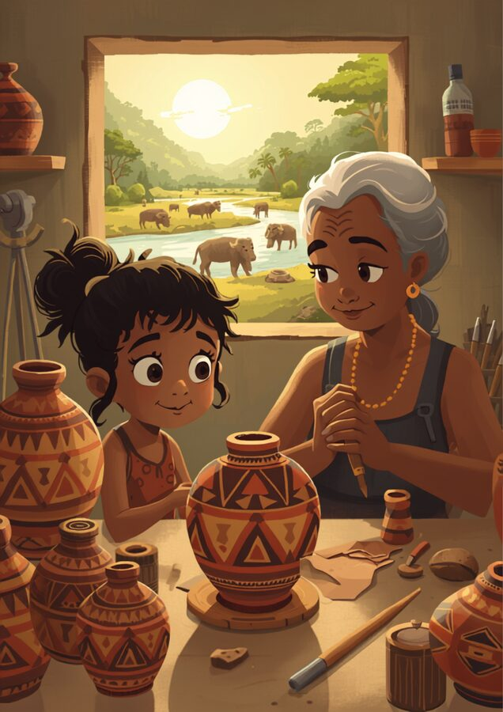

🏺 Os vasos sagrados de Maiana
Na bela Ilha de Marajó, no Pará, a menina Maiana passa as tardes na oficina de cerâmica de sua avó, uma respeitada artesã que preserva com amor os saberes ancestrais da antiga cultura Marajoara. A avó de Maiana consegue moldar e pintar desenhos geométricos impressionantes que se repetem perfeitamente ao redor dos vasos e urnas de argila.
"Vovô, como seus desenhos parecem gêmeos perfeitos? Eles têm o mesmo tamanho e as mesmas pontas!", pergunta Maiana, admirada. A avó explica que os antigos artistas sabiam que, se desenhassem triângulos com os mesmos três lados iguaizinhos, todos os ângulos e cantos deles também seriam exatamente iguais, sem precisar medir um por um.
Maiana descobre que esses "gêmeos da geometria" guardam uma simetria mágica: quando dois triângulos são perfeitamente idênticos (congruentes), eles se encaixam um sobre o outro de forma perfeita, mantendo a tradição, a simetria e a beleza da sua cultura.

🧩 Casos de congruência
Dois triângulos são congruentes quando é possível sobrepor um ao outro fazendo coincidir todos os lados e todos os ângulos correspondentes. A boa notícia: não precisamos comparar os 6 elementos — basta garantir 3 elementos certos, seguindo um dos casos abaixo.
✏️ Vamos treinar
🖐️ Vire o gêmeo do modelo
Arraste os vértices do seu triângulo (à direita) até os três lados ficarem parecidos com os do triângulo-modelo (à esquerda).
Missão — Qual caso garante isso?
Se as medidas dos 3 lados do seu triângulo ficaram iguais às do modelo, qual caso de congruência garante que eles são congruentes?
🖨️ Carimbos e moldes da sua cultura
Carimbos, moldes, fôrmas e gabaritos existem para reproduzir a mesma forma várias vezes, com precisão — é a congruência em ação no dia a dia.
Pense em um carimbo, molde ou gabarito do seu contexto
Descreva o objeto e explique: por que usar um molde garante peças congruentes, em vez de desenhar cada uma "de olho"?
✅ Antes de seguir em frente
Marque com sinceridade. Isto não vale nota — é um mapa para você (e seu professor) saberem onde reforçar.
🎮 Qual é o caso?
Observe as marcas no triângulo e diga qual caso de congruência está sendo mostrado.
Qual caso de congruência é esse?